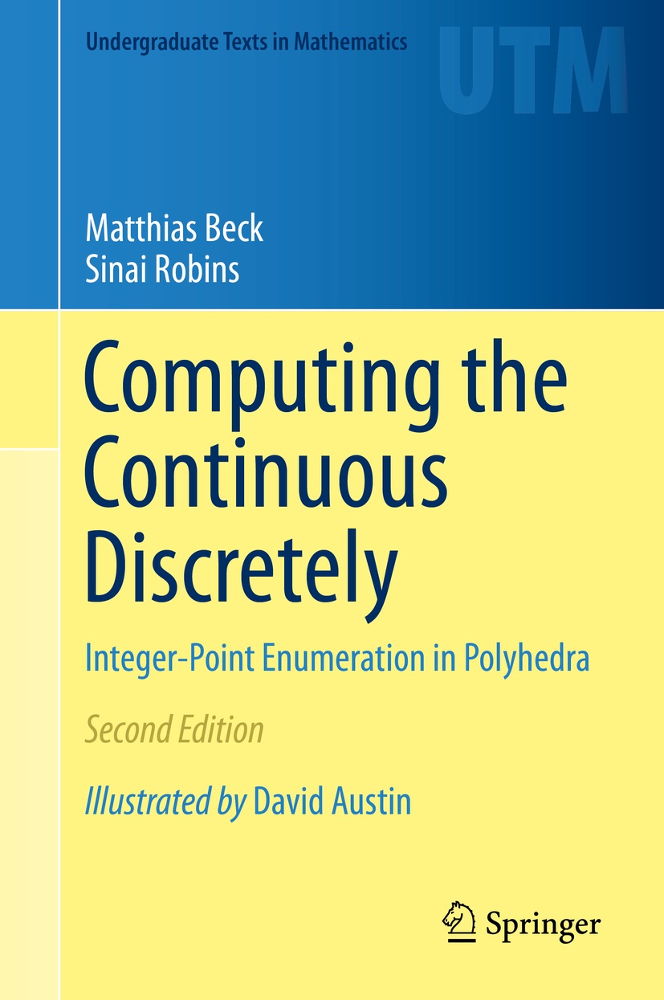

|
Corrections & updates for the 2nd edition of Computing the Continuous Discretely: Integer-Point Enumeration in Polyhedra by Matthias Beck and Sinai Robins (Springer 2015):
- p. 83, Exercise 3.3: "horizontal" should be "vertical."
- p. 83, Exercise 3.7: the summand z1 in the numerator of the formula for sigmaK should be a 1.
- p. 98, Note 7: the Gorenstein conditions are not stated correctly.
- p. 111, Exercise 5.14(b): the condition should be that no three of those vectors span a plane.
- p. 151, Equation (8.4), and p. 247, Exercise 14.3: the formula for
polyA(n) should read (-1)d-1/(d-1)!
Bd-1A(-n).
- p. 160, Corollary 8.12: the formulas for the h*-coefficients are not correct.
- p. 161, Note 3: the appearance of Bernoulli-Barnes polynomials as part of the restricted partition function goes back to an 1857
paper by Sylvester (almost 50 years before Barnes introduced Bernoulli-Barnes polynomials).
- p. 172, last line in the proof of Lemma 9.1: the Cartesian product should be a Minkowski
sum.
- p. 175, Lemma 9.6: the sums in the big set should be differences. The proof of
Theorem 9.5 and Exercises 9.13-15 need to be adjusted accordingly.
- p. 192, Note 3: the d-l exponent in the symmetry equation for b(z) should be s-1.
- p. 271: the page numbers in [100] for Dehn's 1905 publication are incorrect; they should read 561-586.
An updated pdf version of our book, in which all of the above are corrected, is here.
|
|

|